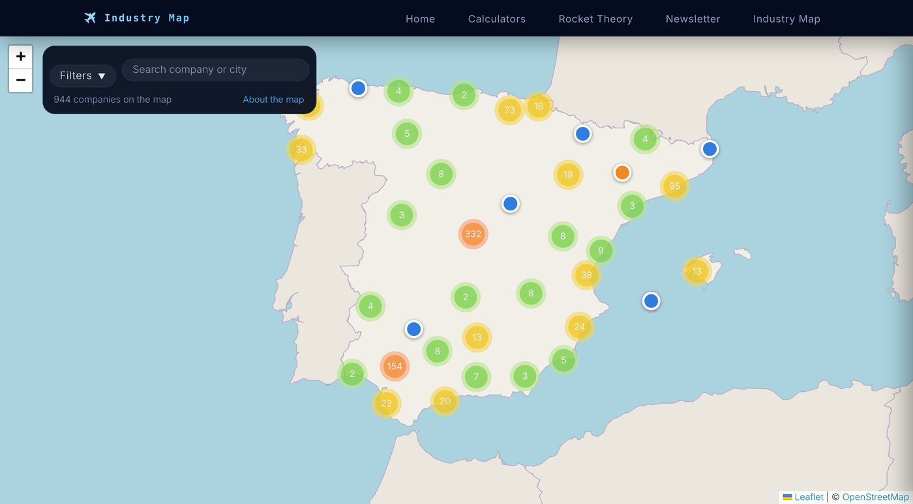
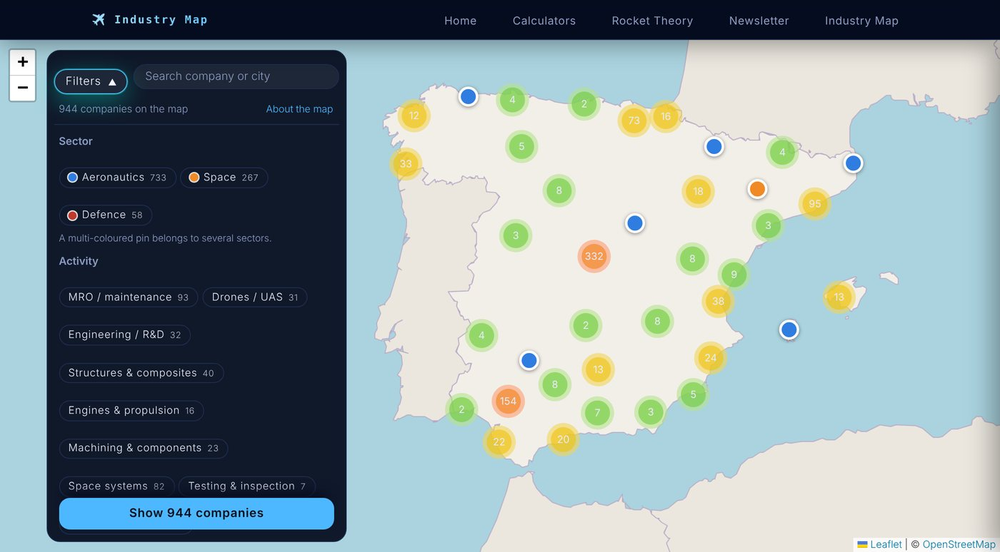
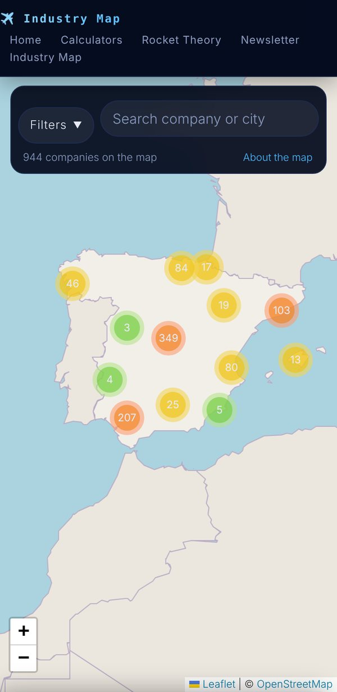

The aerospace industry in Spain, on one mapLa industria aeroespacial española, en un mapa
When I started looking at where I could work after my master's, I ran into a surprisingly basic problem: there was no single place to see the Spanish aerospace industry. There are association member lists, regional cluster websites, official registries and business directories, but each one shows only a slice, and none of them tells you where the companies actually are. If you want to know which space companies exist around Madrid, or who does composites in Andalusia, you end up opening twenty tabs.Cuando empecé a mirar dónde podría trabajar después del máster, me topé con un problema sorprendentemente básico: no había un único sitio donde ver la industria aeroespacial española. Hay listas de miembros de asociaciones, webs de clústeres regionales, registros oficiales y directorios de empresas, pero cada uno muestra solo una parte y ninguno te dice dónde están realmente las empresas. Si quieres saber qué empresas espaciales hay alrededor de Madrid, o quién hace composites en Andalucía, acabas abriendo veinte pestañas.
So I built the tool I was missing. The Industry Map gathers more than 900 aeronautics, space and defence companies in Spain into one interactive map. Every company has a card with its sector, its activity, a short description, its website and all the sites we could locate, and you can filter the whole map in a couple of taps.Así que construí la herramienta que me faltaba. El Mapa de industria reúne más de 900 empresas aeronáuticas, espaciales y de defensa en España en un único mapa interactivo. Cada empresa tiene una ficha con sus sectores, su actividad, una breve descripción, su web y todas las sedes que hemos podido localizar, y puedes filtrar todo el mapa en un par de toques.
This article explains what the map can do, how the filters work, who I had in mind while building it and, finally, where the data comes from. It is a pre-alpha, so expect rough edges. Let us dive into it!Este artículo explica qué puede hacer el mapa, cómo funcionan los filtros, en quién pensaba al construirlo y, por último, de dónde salen los datos. Es una pre-alfa, así que puede tener algún fallo. ¡Vamos allá!
OPEN THE INDUSTRY MAP →ABRIR EL MAPA DE INDUSTRIA →
What you can do with itQué puedes hacer con él
The map is designed to answer a simple question quickly: who is doing what, and where? These are the main things you can do with it:El mapa está pensado para responder rápido a una pregunta sencilla: ¿quién hace qué, y dónde? Estas son las principales cosas que puedes hacer con él:
- Explore by zoom: at country level, companies are grouped into numbered circles. Zoom in, or tap a circle, and they split into individual pins. This keeps the map readable even in hubs with hundreds of companies.Explorar con el zoom: a escala nacional, las empresas se agrupan en círculos numerados. Acerca el zoom, o toca un círculo, y se separan en pines individuales. Así el mapa se lee bien incluso en zonas con cientos de empresas.
- Read a company card: tap any pin to open its card with the sectors it works in, the type of activity, a short description, its tags (cluster memberships, approvals...), the list of sites and a link to its website. The map moves so the pin stays visible next to the card.Ver la ficha de una empresa: toca cualquier pin para abrir su ficha con los sectores en los que trabaja, el tipo de actividad, una breve descripción, sus etiquetas (clústeres, aprobaciones...), la lista de sedes y un enlace a su web. El mapa se mueve para que el pin siga visible junto a la ficha.
- See every site: many companies have more than one location (headquarters, plants, offices). Each one appears as its own pin, and from the card you can jump between them.Ver todas las sedes: muchas empresas tienen más de una ubicación (sede central, plantas, oficinas). Cada una aparece como un pin propio, y desde la ficha puedes saltar de una a otra.
- Browse crowded spots: when several companies share the same town, tapping the group fans the pins out and opens a list of every company there, in alphabetical order, so you can go straight to the one you want.Recorrer los puntos con muchas empresas: cuando varias empresas comparten municipio, al tocar el grupo los pines se despliegan y se abre una lista con todas, en orden alfabético, para que vayas directamente a la que te interesa.
- Search: type a company name or a city in the search box. Results update as you type, and pressing Enter zooms the map to the matches.Buscar: escribe el nombre de una empresa o de una ciudad en el buscador. Los resultados se actualizan mientras escribes y, al pulsar Intro, el mapa se acerca a las coincidencias.
- Read the colours: pins are coloured by sector: aeronautics, space and defence. A company that works in several sectors gets a pin split between their colours.Entender los colores: los pines se colorean por sector: aeronáutica, espacio y defensa. Una empresa que trabaja en varios sectores tiene un pin repartido entre sus colores.
- Use it on any screen: on a phone or a tablet, the filters open as a full panel and the company card slides up from the bottom, so it works one-handed on the train as well as on a desktop.Usarlo en cualquier pantalla: en el móvil o la tableta, los filtros se abren como un panel completo y la ficha de la empresa sube desde abajo, así que funciona con una sola mano en el tren igual que en el ordenador.
The filtersLos filtros
The Filters button opens three groups. Inside a group, selecting several options shows companies that match any of them; between groups, the conditions add up. For example, Space + Engineering / R&D + CITT-Espacio shows the space engineering companies listed by that Madrid cluster. Each option shows how many companies you would get, and the counts update live as you combine them.El botón Filtros abre tres grupos. Dentro de un grupo, al seleccionar varias opciones se muestran las empresas que cumplen cualquiera de ellas; entre grupos, las condiciones se suman. Por ejemplo, Espacio + Ingeniería / I+D + CITT-Espacio muestra las empresas de ingeniería espacial que figuran en ese clúster madrileño. Cada opción indica cuántas empresas obtendrías, y los números se actualizan al combinarlas.
- Sector: Aeronautics, Space and Defence. A company can belong to more than one.Sector: Aeronáutica, Espacio y Defensa. Una empresa puede pertenecer a más de uno.
- Activity: MRO / maintenance, Drones / UAS, Engineering / R&D, Structures & composites, Engines & propulsion, Machining & components, Space systems, Testing & inspection and Startups / ESA BIC.Actividad: MRO / mantenimiento, Drones / UAS, Ingeniería / I+D, Estructuras y composites, Motores y propulsión, Mecanizado y componentes, Sistemas espaciales, Ensayos e inspección y Startups / ESA BIC.
- Network or cluster: Andalucía Aerospace, Aerópolis (Seville), HEGAN (Basque Country), Espai Aero CV (Valencia), the Galician cluster, AERA (Aragon), CAAC (Canary Islands), Castilla-La Mancha, CITT-Espacio, TEDAE, AESA Part 145 and AESA POA. This tells you the company appears in that cluster or official list; its sites can be in another region.Red o clúster: Andalucía Aerospace, Aerópolis (Sevilla), HEGAN (País Vasco), Espai Aero CV (C. Valenciana), el clúster gallego, AERA (Aragón), CAAC (Canarias), Castilla-La Mancha, CITT-Espacio, TEDAE, AESA Parte 145 y AESA POA. Indica que la empresa figura en ese clúster o lista oficial; sus sedes pueden estar en otra región.
When you are happy with the selection, Show N companies closes the panel and zooms to the results, and Clear filters takes you back to the full map. Filters and search work together, so you can, for instance, look for every MRO organisation around a given city.Cuando tengas la selección que quieres, Ver N empresas cierra el panel y acerca el mapa a los resultados, y Quitar filtros te devuelve al mapa completo. Los filtros y el buscador funcionan juntos, así que puedes, por ejemplo, buscar todas las organizaciones de mantenimiento alrededor de una ciudad.


Who it is forPara quién es
I built this map first and foremost for people looking for a job or an internship in the sector. When you are a student, you usually know the five big names, but the Spanish industry is made of hundreds of smaller companies: suppliers, engineering firms, maintenance shops, test labs and young space startups. Many of them are hiring and very few students have heard of them. With the map you can:Construí este mapa, ante todo, para quien busca trabajo o prácticas en el sector. Cuando eres estudiante, sueles conocer los cinco grandes nombres, pero la industria española está formada por cientos de empresas más pequeñas: proveedores, ingenierías, talleres de mantenimiento, laboratorios de ensayos y startups espaciales jóvenes. Muchas de ellas contratan y muy pocos estudiantes las conocen. Con el mapa puedes:
- Find companies near you, or near the city you want to move to, and check the commute before applying.Encontrar empresas cerca de ti, o de la ciudad a la que quieres mudarte, y ver el trayecto antes de enviar la candidatura.
- Target your speciality: if you love propulsion, structures or simulation, filter by that activity and build a list of companies to contact.Apuntar a tu especialidad: si te apasiona la propulsión, las estructuras o la simulación, filtra por esa actividad y haz una lista de empresas a las que escribir.
- Discover the hubs: see at a glance how the industry concentrates in areas such as Madrid, Andalusia, the Basque Country or Catalonia, and which smaller regions also have an aerospace community.Descubrir los polos: ve de un vistazo cómo se concentra la industria en zonas como Madrid, Andalucía, el País Vasco o Cataluña, y qué regiones más pequeñas también tienen comunidad aeroespacial.
- Prepare an application: the card gives you the activity and the website, a good starting point to learn about a company before an interview.Preparar una candidatura: la ficha te da la actividad y la web, un buen punto de partida para conocer una empresa antes de una entrevista.
It is also useful for engineers changing jobs, students looking for a thesis or a company for their TFG/TFM, companies scouting suppliers or partners in a given region, and anyone curious about how big and how varied the Spanish aerospace ecosystem really is. If you have ever wondered "who does this in Spain?", the map is for you.También es útil para ingenieros que quieren cambiar de empresa, estudiantes que buscan tema o empresa para su TFG/TFM, empresas que buscan proveedores o socios en una región concreta y cualquiera con curiosidad por saber lo grande y variado que es de verdad el ecosistema aeroespacial español. Si alguna vez te has preguntado «¿quién hace esto en España?», este mapa es para ti.
A pre-alpha: what to keep in mindUna pre-alfa: qué tener en cuenta
The data was compiled by hand from public sources, and an industry this size changes every month. A few things to keep in mind:Los datos se han recopilado a mano a partir de fuentes públicas, y una industria de este tamaño cambia cada mes. Algunas cosas a tener en cuenta:
- Locations: a pin may point to the municipality, or to the registered office, rather than to the exact plant or office. Within a town, companies are grouped on the same spot on purpose.Ubicaciones: un pin puede apuntar al municipio, o al domicilio social, en lugar de a la planta u oficina exacta. Dentro de un municipio, las empresas se agrupan a propósito en el mismo punto.
- Coverage: some companies may be missing, and a few may have moved, merged or closed. Inclusion is not an endorsement.Cobertura: puede faltar alguna empresa, y algunas pueden haberse trasladado, fusionado o cerrado. Aparecer en el mapa no implica ningún respaldo.
- Language: the map is available in English and Spanish, but company descriptions are kept in their original Spanish for now.Idioma: las descripciones de las empresas están en español; en la versión en inglés de la web se muestran tal cual.
- Check before you go: if a company interests you, take two minutes to confirm its address and activity on its website. It is the quickest way to be sure.Compruébalo antes de ir: si una empresa te interesa, dedica dos minutos a confirmar su dirección y su actividad en su web. Es la forma más rápida de asegurarte.
If you spot an error or a missing company, I would love to hear about it through the contact section. Every correction makes the map better for the next person.Si ves un error o falta alguna empresa, me encantará saberlo a través de la sección de contacto. Cada corrección mejora el mapa para la siguiente persona.
SourcesFuentes
The company list was built by merging and de-duplicating the following public sources (consulted in October 2026), and then completing each company's activity and sites from its own website and public business registries. The sites of the largest companies were checked one by one against their official websites and the press:La lista de empresas se ha construido uniendo y eliminando duplicados de las siguientes fuentes públicas (consultadas en octubre de 2026), y completando después la actividad y las sedes de cada empresa con su propia web y con registros mercantiles públicos. Las sedes de las principales empresas se revisaron una a una en sus webs oficiales y en prensa:
- Business directory:Directorio de empresas: eInforma, companies registered under CNAE 3031 and 3032 (civil and military aeronautical and space construction)eInforma, empresas registradas en los CNAE 3031 y 3032 (construcción aeronáutica y espacial civil y militar).
- National association:Asociación nacional: TEDAE, current membersTEDAE, asociados actuales.
- Spanish Aviation Safety Agency (AESA):Agencia Estatal de Seguridad Aérea (AESA): Part 145 maintenance organisationsorganizaciones de mantenimiento Parte 145 and production organisations (POA, 2023 list)organizaciones de producción (POA, lista de 2023).
- Regional clusters:Clústeres regionales: Andalucía Aerospace, Aerópolis, HEGAN, Espai Aero CV, Consorcio Aeroespacial Gallego, AERA, CAAC, Castilla-La Mancha aeronautics clusterClúster Aeronáutico de Castilla-La Mancha and CITT-Espacio.
- Startups: ESA BIC incubatees and alumni registryregistro de empresas incubadas y alumni de ESA BIC.
- Reference catalogues:Catálogos de referencia: Plataforma Aeroespacial Española, Spanish aerospace ecosystemPlataforma Aeroespacial Española, ecosistema aeroespacial español and the Ministry of Defence catalogue of the Spanish defence industry, aerospace sectorcatálogo de la industria española de defensa del Ministerio de Defensa, sector aeroespacial.
- Map: base map ©Mapa: cartografía © OpenStreetMap contributorscolaboradores de OpenStreetMap, built with, hecho con Leaflet and Leaflet.markercluster.
I hope this map saves you some of the twenty tabs I had to open, and helps you find a place in this industry where you can grow. The sector in Spain is much bigger and more diverse than it looks from the outside, and there is room for all kinds of engineers. Have a look, play with the filters, and good luck with the search!Espero que este mapa te ahorre algunas de las veinte pestañas que tuve que abrir yo, y que te ayude a encontrar un sitio en esta industria donde crecer. El sector en España es mucho más grande y diverso de lo que parece desde fuera, y hay sitio para todo tipo de ingenieros. Échale un vistazo, juega con los filtros, ¡y suerte con la búsqueda!